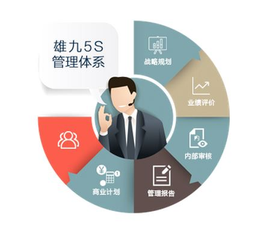
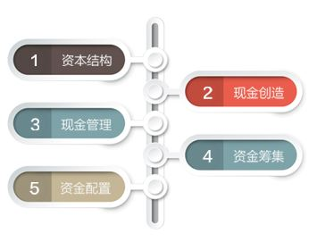

|
雄九5S管理系统 5S是战略规划体系、业绩评价体系、内部审计体系、 经理人考评体系、管理报告体系和商业计划体系等5个System的简称， 是雄九从自身特点出发探索的多元化控股企业管理模式，是雄九的核心管理体系。 5S使雄九集团多元化企业管理模式更科学有序，整体管理架构变得更加扁平， 管理层可以及时、准确地获取管理信息，有力地促进了总部战略管理能力的提升和战略导向型组织的形成。 |
 |
|  |
雄九5C价值型财务管理体系 5C体系是以资本、资金、资产管理为主线， 以资本结构（Capital Structure）、现金创造（Cash Generation）、 现金管理（Cash Management）、资金筹集（Capital Raising） 和资产配置（Capital Allocation）为核心的价值型财务管理体系。 5C体系内在的逻辑循环：公司在价值创造过程中， 首先考虑资本来源、资本成本和结构比例，设定公司资本结构； 通过经营活动将资本转化为有竞争力的产品或服务，实现现金创造， 获得持续增长所需的内部资金来源；通过付息、派息、现金周转与资金集中等进行现金管理； 并通过资产配置活动动态调整资产组合以实现公司价值持续增长从而形成价值创造的完整循环。 |